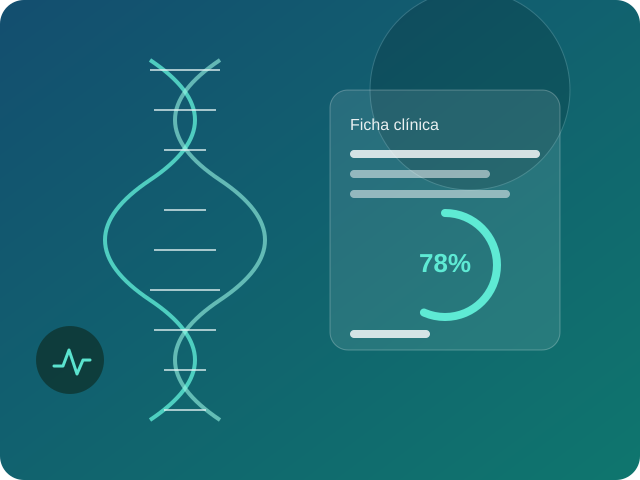

¿Qué es la IA aplicada a la salud?
Incluye aprendizaje automático, visión por computadora y procesamiento de lenguaje natural aplicados a imágenes médicas, resultados de laboratorio, señales de dispositivos y texto clínico.
La inteligencia artificial en medicina usa algoritmos que aprenden de datos clínicos para reconocer patrones y apoyar decisiones. Hoy funciona como herramienta de apoyo: el profesional de salud valida y decide.

Incluye aprendizaje automático, visión por computadora y procesamiento de lenguaje natural aplicados a imágenes médicas, resultados de laboratorio, señales de dispositivos y texto clínico.
Avances normativos que marcan el camino de la IA en salud a nivel global y en Panamá.
La OMS publica Ethics and governance of artificial intelligence for health, su primera guía global de ética en IA para la salud.
La OMS emite nueva guía sobre modelos multimodales grandes (LMM) en salud, con más de 40 recomendaciones para su uso responsable.
Panamá lanza su Agenda Nacional de Tecnologías Avanzadas, que incluye una Estrategia Nacional de Inteligencia Artificial con aplicaciones en salud.
La FDA publica un documento de discusión sobre cómo regular los dispositivos médicos con IA generativa.
Ingeniería de Software · UTP
Ingeniería de Software · UTP